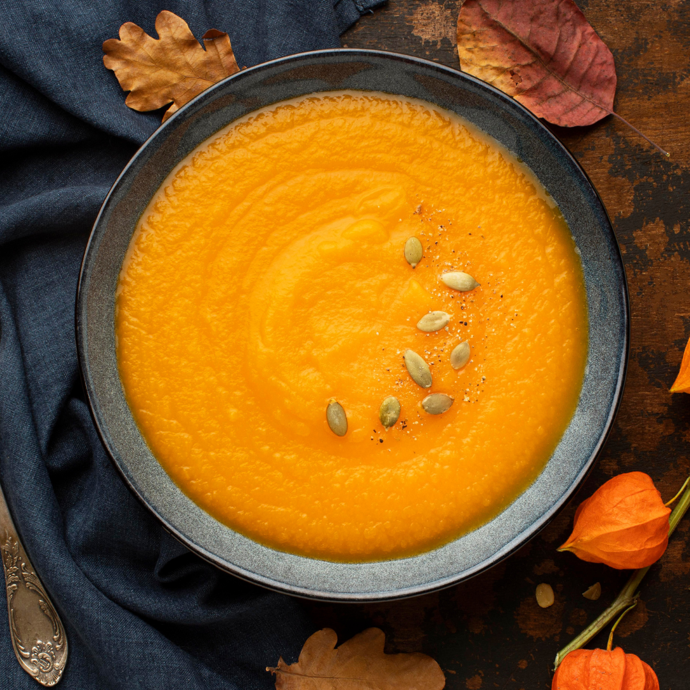

Vellutata di zucca e ceci
Ingredienti: 1 kg di zucca pulita, 1 porro, 250 g di ceci (se precotti, sgocciolati), 1 l di brodo vegetale, 3 cucchiai di panna vegetale, crostini, sale, pepe e olio.
Le dosi delle ricette sono per due persone.
Fai click sulle foto per scoprirle.
Ingredienti: 1 kg di zucca pulita, 1 porro, 250 g di ceci (se precotti, sgocciolati), 1 l di brodo vegetale, 3 cucchiai di panna vegetale, crostini, sale, pepe e olio.
Ingredienti: 500 g di funghi freschi, 160 g di riso carnaroli, 2 l di brodo vegetale, ½ cipolla, 1 spicchio d’aglio, 2 cucchiai di panna vegetale, ½ bicchiere di vino bianco, olio, sale, pepe, peperoncino e prezzemolo.